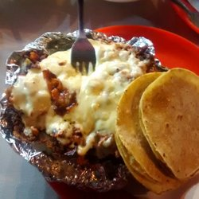
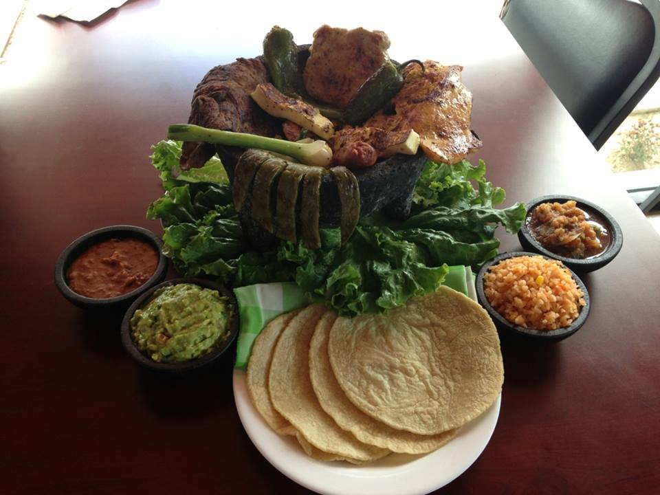

TaquitoMX
¡BIENVENID@!
TaquitoMX, te da la más cordial bienvenida a nuestra Página Web. Ven y prueba nuestra variedad de platillos.
¡Te esperamos!
TACOS
Pastor C/Queso
De los tacos mas pedidos de la casa, sin duda sera tu favorito si eres amante de los tacos al pastor. !Con queso manchego fresco¡
ALAMBRES

Alambre de pastor
El clasico alambre de pastor no puede faltar en tu mesa, con chile morron fresco y con queso de calidad.
ESPECIALIDADES
Molcajete
Una de nuestras especialidades de la casa TaquitoMX, es el molcajete, con nopales y cebollitas bien cocidas y frescas.